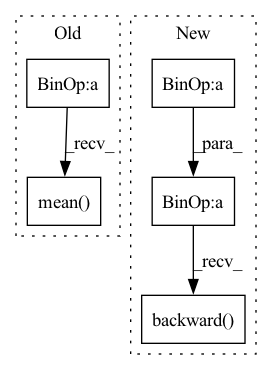

Pattern ID :20358

Before Change
loss_Dr1 = r1_penalty * (self.r1_gamma / 2)
loss_numpy["loss_Dr1"] = loss_Dr1.cpu().detach().numpy().mean()
loss4 = (loss_Dreal + loss_Dr1).mean() * float(gain)
// if do_Dmain:
// loss4 += loss3
with torch.autograd.profiler.record_function(name + "_backward"):
After Change
// loss4 += loss3
with torch.autograd.profiler.record_function(name + "_backward"):
// loss4.backward() // 咩酱：gain即上文提到的这个阶段的训练间隔。
(real_logits * 0 + loss_Dreal + loss_Dr1).mean().mul(gain).backward()
if self.align_grad:
mapping = self.mapping.module if self.is_distributed else self.mapping
synthesis = self.synthesis.module if self.is_distributed else self.synthesis
discriminator = self.discriminator.module if self.is_distributed else self.discriminator
In pattern: SUPERPATTERN
Frequency: 3
Non-data size: 5
Instances
Fragment ID: 66029839
Project Name: miemie2013/miemiegan
Commit Name: 308da226a2d1e0dc4f2c0543c80e1904d79a3bf1
Time: 2022-04-09
Author: 53960695+miemie2013@users.noreply.github.com
File Name: mmgan/models/architectures/styleganv2ada_model.py
M Class Name: StyleGANv2ADAModel
N Class Name: StyleGANv2ADAModel
M Method Name: accumulate_gradients(9)
N Method Name: accumulate_gradients(9)
M Parent Class:
N Parent Class:
M File Name: mmgan/models/architectures/styleganv2ada_model.py
N File Name: mmgan/models/architectures/styleganv2ada_model.py
M Start Line: 184
M End Line: 353
N Start Line: 208
N End Line: 356
'>
Before Change
loss_Dr1 = r1_penalty * (self.r1_gamma / 2)
loss_numpy["loss_Dr1"] = loss_Dr1.cpu().detach().numpy().mean()
loss4 = (loss_Dreal + loss_Dr1).mean() * float(gain)
if do_Dmain:
loss4 += loss3
loss4.backward() // 咩酱：gain即上文提到的这个阶段的训练间隔。
After Change
// if do_Dmain:
// loss4 += loss3
// loss4.backward() // 咩酱：gain即上文提到的这个阶段的训练间隔。
(real_logits * 0 + loss_Dreal + loss_Dr1).mean().mul(gain).backward()
return loss_numpy
def train_iter(self, optimizers=None):
phase_real_img = self.input[0]
'>
Fragment ID: 66029835
Project Name: miemie2013/miemiegan
Commit Name: cf43a0a8db722386b89e71d5d33b472774867ea1
Time: 2022-02-24
Author: 53960695+miemie2013@users.noreply.github.com
File Name: mmgan/models/architectures/styleganv2ada_model.py
M Class Name: StyleGANv2ADAModel
N Class Name: StyleGANv2ADAModel
M Method Name: accumulate_gradients(8)
N Method Name: accumulate_gradients(8)
M Parent Class: torch.nn.Module
N Parent Class: torch.nn.Module
M File Name: mmgan/models/architectures/styleganv2ada_model.py
N File Name: mmgan/models/architectures/styleganv2ada_model.py
M Start Line: 148
M End Line: 236
N Start Line: 176
N End Line: 268
'>
Before Change
// if do_Dmain:
// loss4 += loss3
// loss4.backward() // 咩酱：gain即上文提到的这个阶段的训练间隔。
(real_logits * 0 + loss_Dreal + loss_Dr1).mean().mul(gain).backward()
return loss_numpy
def train_iter(self, optimizers=None):
After Change
loss_Dr1 = r1_penalty * (self.r1_gamma / 2)
loss_numpy["loss_Dr1"] = loss_Dr1.cpu().detach().numpy().mean()
loss4 = (loss_Dreal + loss_Dr1).mean() * float(gain)
// if do_Dmain:
// loss4 += loss3
loss4.backward() // 咩酱：gain即上文提到的这个阶段的训练间隔。
return loss_numpy
def train_iter(self, optimizers=None):
'>
Fragment ID: 66029863
Project Name: miemie2013/miemiegan
Commit Name: fbc8738996ce75111be885ba7ac313d85969a2b8
Time: 2022-02-25
Author: 53960695+miemie2013@users.noreply.github.com
File Name: mmgan/models/architectures/styleganv2ada_model.py
M Class Name: StyleGANv2ADAModel
N Class Name: StyleGANv2ADAModel
M Method Name: accumulate_gradients(8)
N Method Name: accumulate_gradients(8)
M Parent Class: torch.nn.Module
N Parent Class: torch.nn.Module
M File Name: mmgan/models/architectures/styleganv2ada_model.py
N File Name: mmgan/models/architectures/styleganv2ada_model.py
M Start Line: 138
M End Line: 260
N Start Line: 143
N End Line: 262